6 Lerneinheit 06: Erfassung von Fraßschäden in Kiefernbeständen
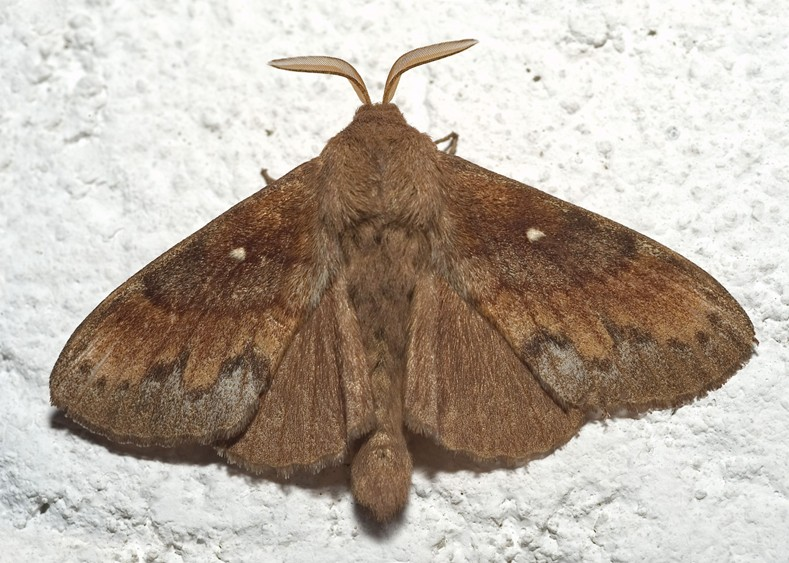
6.1 Lernziele & Aufgabenstellung
Die Nordwestdeutsche Forstliche Versuchsanstalt (NW-FVA) überwacht in Niedersachsen großflächige Fraßschäden des Kiefernspinners (Dendrolimus pini, Abbildung 1) mithilfe von Fernerkundungsverfahren. Im Juli 2013 wurde dazu eine Luftbildbefliegung durchgeführt und digitale Orthophotos (DOP) hergestellt. In dieser Lerneinheit sollen Schwerpunkte der Kiefernspinnerverbreitung in Kiefernwäldern des Wendlandes (Landkreis Lüchow-Dannenberg) kartiert werden. Grundlage der Kartierung verschiedener Fraßintensitäten ist ein DOP mit einer räumlichen Auflösung von 20 cm (DOP20).
Lernziele
Die Studierenden sollen:
- Luftbilder für die Schadenskartierung aufbereiten
- Vegetationsindizes berechnen
- Schadflächen digitalisieren
Aufgaben
- Rasterdaten importieren und als CIR darstellen
- Berechnung des Normalized Difference Vegetation Index (NDVI)
- Durchführung einer Kontraststreckung und Erstellen einer Farbpalette
- Digitalisierung der Schadflächen
6.2 Aufgabe 0: Anlegen eine neuen QGIS-Projektes
Folgen sie der Anleitung aus LE01 Kapitel 1.3 um eine neue Ordnerstruktur und ein neues QGIS-Projekt für LE05 anzulegen. In der Übung bietet es sich an den Ordner “daten” weiter in die Unterordner “vektor” und “raster” zu unterteilen.
6.3 Aufgabe 01: Download und Import des Ortholuftbildes
Nachdem wir das Projekt angelegt haben, soll das Luftbild aus der Befliegung der NWFVA importiert werden. Laden Sie zunächst die Geodatensätze für die Übungen herunter. Sie finden diese hier:
https://cloud.hawk.de/index.php/s/WffowNpbeg4qajB
Kopieren & entpacken Sie sich diesen Ordner.
Bei dem Bild handelt es sich um ein Digitales Orthophoto (DOP) mit vier Bändern:
- Band 1 (rot)
- Band 2 (grün)
- Band 3 (blau)
- Band 4 (nir, Nahes Infrarot)
Importieren sie die Ortholuftbilder in ihr QGIS-Projekt und erzeugen Sie eine CIR-Falschfarbendarstellung (siehe auch LE02 Kapitel 2.6).
Fragen:
- Welche räumliche Auflösung hat das Luftbild?
- Welche radiometrische Auflösung hat das Luftbild?
6.4 Aufgabe 02: Berechnung des Normalized Difference Vegetation Index (NDVI)
Zur besseren Ansprache der Vitalität/des Blattverlusts berechnen wir den Normalisierten Differenz-VegetationsIndex (NDVI) nach der folgenden Formel:
\[
\text{ndvi} = \dfrac{\text{nir} - \text{rot}}{\text{nir} + \text{rot}}
\] Für die Berechnung nutzen wir den Raster → Rasterrechner:
Die Liste “Rasterkanäle” enthält alle geladenen Bänder, die verwendet werden können. Um ein Rasterband zum Feld für den Rasterberechnungsausdruck hinzuzufügen, doppelklicken Sie auf den Bandnamen in der Liste “Felder”. Sie können dann die Operatoren verwenden, um Berechnungsausdrücke zu formulieren, oder Sie können sie einfach in das Feld eingeben. Vergessen Sie nicht die Klammern! Als Ergebnis definieren Sie den Ausgabelayer: “sub_prezelle_2013_ndvi” mit Angabe des Speicherpfades und das Ausgabeformat: “GeoTIFF”.
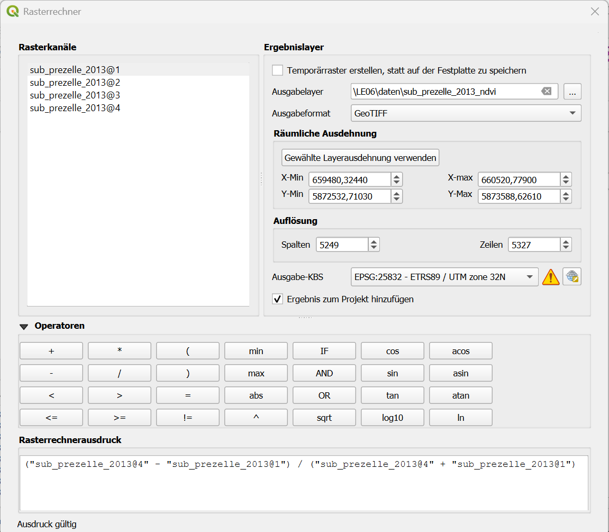
Als Ausgabe erhalten wir ein Graustufenbild mit den NDVI Werten im Bereich -1 ≤ Pixelwert ≤1 (s. unten)
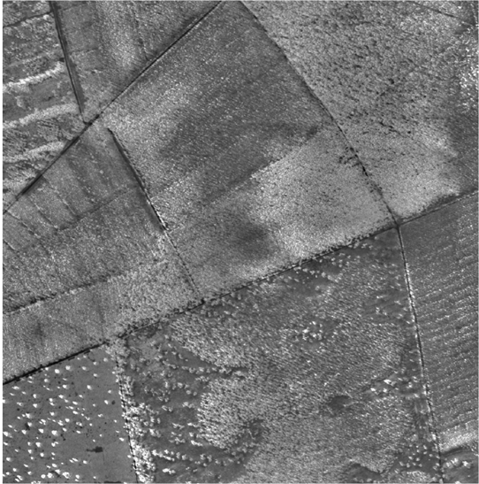
NDVI
- Welche Unterschiede gibt es zwischen einer CIR-Falschfarbendarstellung und NDVI Darstellung?
- Was ist der kleinste und was der größte NDVI-Wert?
- Welche NDVI-Werte haben geschädigte, welche gesunde Kiefern?
- Sind allen niedrigen NDVI-Werte auf Fraßschäden zurückzuführen?
6.5 Aufgabe 03: Bildverbesserung
6.5.1 Kontraststreckung
Der NDVI hat einen theoretischen Wertebereich von [-1;1].Histogramme können genutzt werden, um die Verteilung der NDVI-Werte zu überprüfen. Zum Erstellen des Histogramms gehen wir auf Layereigenschaften -> Histogramm -> Berechnen
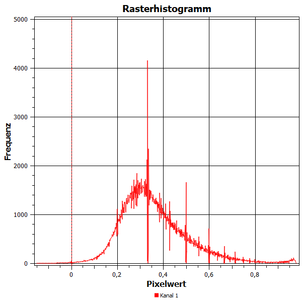
Das Histogramm zeigt eine typische Verteilung der NDVI-Werte über Vegetationsoberflächen. Es ist deutlich zu erkennen, dass der Wertebereich nicht vollständig abgedeckt wird. Die meisten Pixel liegen in Wertebereich von 0.1-0.8. Diese Information können wir nutzen um mithilfe einer Kontraststreckung die Qualität des Bildes zu erhöhen. Dazu schneiden wir die unteren 0,2 % und die oberen 2% der Verteilung ab (Tail-clipping) und strecken den Rest der Werte auf den gesamten Wertebereich.
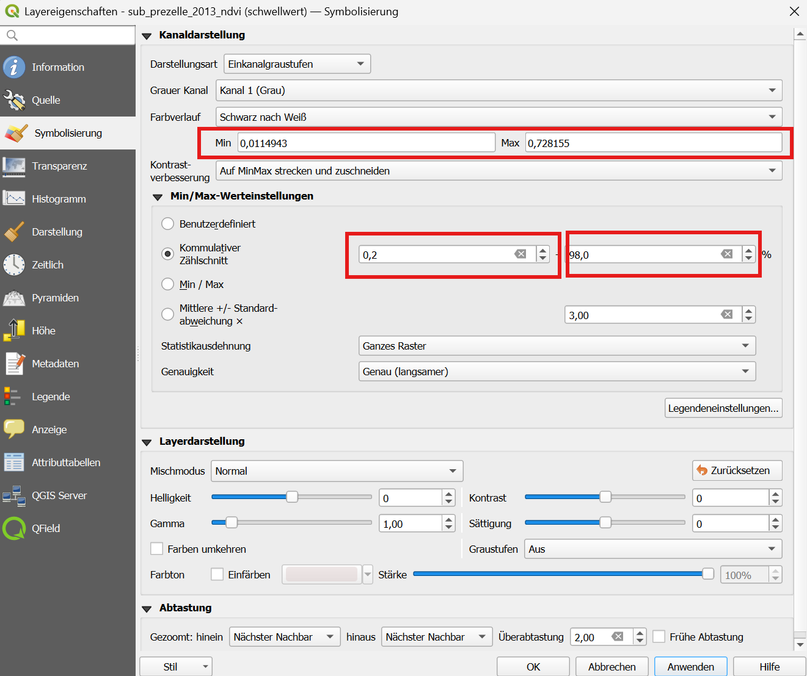
6.5.2 Farbpaletten
Für die Kartierung der Schadflächen kann es sinnvoll sein, die Darstellung der NDVI-Karte nicht als Graustufenbild darzustellen, sondern dafür ein Farbpalette zu nutzen. Erstellen sie dafür einen neuen Stil mit einer kontrastreichen Farbpalette. Stellen Sie dazu die Darstellungsart auf Layereigenschaften -> Symbolisierung auf Einkanalpseudofarben und wählen sie einen geeigneten Farbverlauf (z.B. “Spectral”) aus.
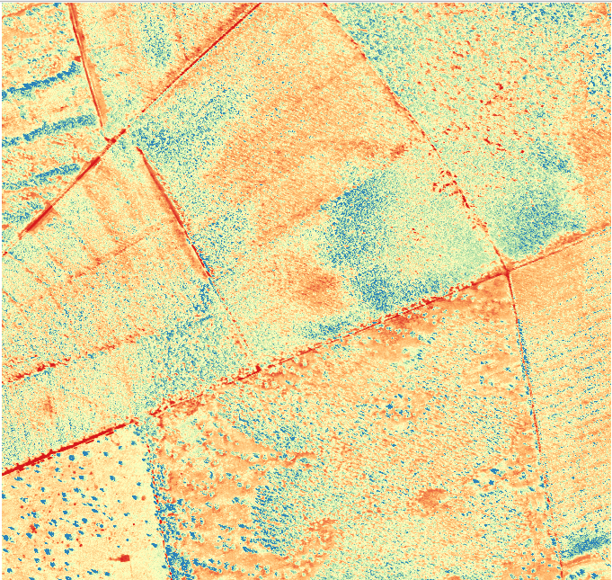
6.6 Aufgabe 04: Digitalisierung der Schadflächen
Im nächsten Schritt sollen die vom Kiefernspinner befallen Flächen digitalisiert werden.
Legen Sie dazu einen neuen Layer an mit Layer → Layer erstellen → Neuer Geopackage-Layer... im Ordner “daten/vektor” mit dem Namen uebung06.gpkg. In dem Geopackage wird ein neuer Layer “Schadflaechen” angelegt. Wählen Sie als Geometrietyp “Polygon” und als KBS “EPSG:25832”. Legen Sie ein neues Feld mit Name “Klasse” und Typ “Ganzzahl (Integer 32 bit) an. Klicken Sie auf”Zur Feldliste hinzufügen”.
Das Feld “Klasse” dient später dazu für die Schadflächen die Klasse “1” anzugeben.
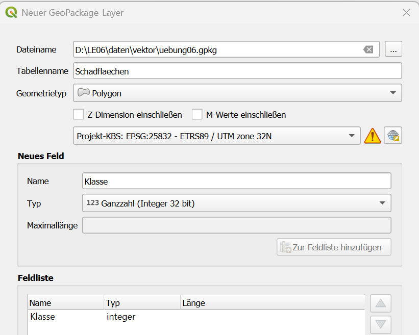
Zur gleichzeitigen Darstellung des Luftbildes und des Vegetationsindex bereiten wir zwei Kartenansichten vor.
Aktivieren Sie im Layer-Panel nur den Layer “sub_prezelle_2013”.
Legen Sie eine neue Kartenansicht im Layer-Panel an mit dem Namen Luftbild mit “Kartenansicht verwalten -> Thema hinzufügen…”
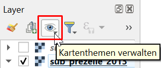
- Aktivieren Sie nun im Layer-Panel den Layer “sub_prezelle_2013_ndvi”. Deaktivieren Sie den Layer “sub_prezelle_2013”. Mit “Kartenansicht verwalten -> Thema hinzufügen…” fügen Sie eine neue Kartenansicht mit dem Namen “NDVI” hinzu.
- Im Hauptmenü
Ansicht→Neue Kartenansichteinen zweiten Viewer mit dem Namen “Karte 1” öffnen. Ordnen Sie Hauptansicht und Ansicht “Karte 1” so an, dass beide Fenster gleich gross nebeneinander platziert sind. - Wählen Sie in Ansicht “Karte 1” das Kartenthema “NDVI” aus.
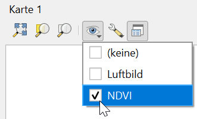
- Aktivieren Sie in den Ansichtseinstellungen der “Karte 1” die Optionen “Ansichtszentrum mit Hauptkarte synchronisieren” und “Maßstäbe synchronisieren”.
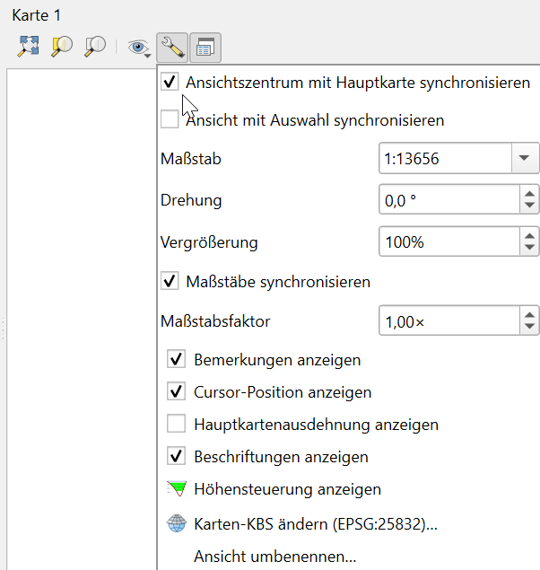
- Aktivieren Sie den Editiermodus des Vektor-Layers “uebung06” mit dem Stiftsymbol , Klicken Sie auf
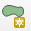
“Polygonobjekt hinzufügen”. Erfassen sie anschließend Bereiche, die Sie eindeutig als befallen erkennen können als Polygone im Hauptansichtsfenster. Weißen sie diesen Polygonen die Klasse “1” zu. - Bestimmen Sie die Flächengröße der Schadflächen.
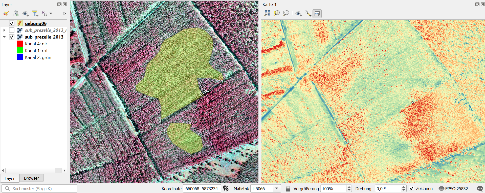
Wenn Sie benachbarte Polygone ohne Geometriefehler direkt anschliessen wollen, können Sie die Ansicht → Werkzeugleisten → Einrastwerkzeuge einschalten. Aktivieren Sie “Überlappungen auf aktiven Layer vermeiden”.
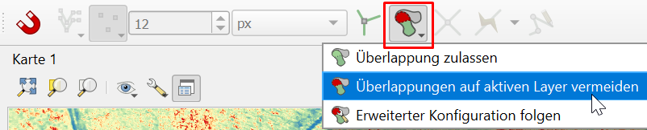
6.7 Aufgabe 05: Entwicklung der Schadflächen (Optional)
Die bisherigen bearbeiteten Aufnahmen stammen aus dem Jahr 2013. Im April 2026 hat das niedersächsische Landesamt für Geoinformation und Landesvermessung (LGLN) erneut eine Befliegung der Flächen vorgenommen. Laden Sie sich die Orthobildkacheln für das Untersuchungsgebiet aus dem Geoportal des LGLN herunter (s. Kapitel 3.3) und vergleichen sie den Stand 2026 mit 2026.
Um die korrekten Kachelnummern eindeutig zu identifizieren können sie zunächst den DOP20-WMS Dienst laden (s. #sec-wms). Hier gibt es einen Layer DOP20 info in dem die Kachelnummern dargestellt werden.
[Zeitliche Änderungen]
Lassen sich Schadflächen von 2013 auch in den Orthobildern 2026 erkennen?
Welche Schlüsse für die Waldbewirtschaftung lassen sich aus dem Vergleich der Jahre 2013 und 2026 ziehen?